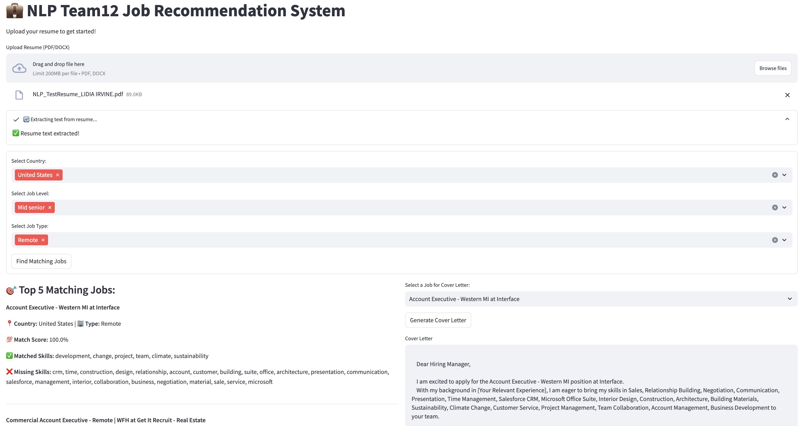

Building a Job Rec System
Check out this project on my Github
This project is where natural language processing meets career search! I worked as the data scientist in the team and designed a job recommendation system that helps users identify roles aligned with their skills, straight from their uploaded resume. Built using Streamlit, the app leverages classic NLP techniques and custom logic to deliver fast, personalized results.
✨ Key Features for Users
Quick Resume Upload
Users can upload their resumes in PDF or DOCX format with just one click—no formatting or manual input required.
Personalized Job Matches
The system automatically recommends job listings that closely align with the user’s skills, experience, and preferences.
Custom Filters
Users can filter job recommendations by location, role, industry, or keywords to tailor results to their career goals.
Top 5 Matching Jobs
See your top 5 most relevant job opportunities based on resume-job fit, sorted by similarity score.
Skill Gap Insights
Instantly view which required skills are missing from your resume, so you can focus on improving them or tailoring your résumé more effectively.
One-Click Cover Letter Draft
Choose a job listing, and the system will generate a personalized cover letter draft—saving time and boosting your application quality.
üìà Result and Flow Chart
The user interface of the system:

The process flow of the system:
<div class="mermaid">
flowchart TD
A1[/"User Upload<br/>Resume"/] -->|"Extract Resume Text"| B1["Preprocess Resume Text<br/>(Remove<br/>Lowercase, Stopwords...)"]
A2{"User Set Preference<br/>(Location, Job<br/>Type, Level)"} --> B2["Filter Job Listings<br/>(Based on User Criteria)"]
B1 & B2 --> C["TF-IDF Vectorization<br/>(Job Description, Resume)"]
C --> D["Compute Cosine Similarity"]
D --> E["Find Top Matches"]
E --> F["Analyze Skill Gaps"]
F --> G[/"Display Results"/]
G --> H["Generate Cover Letter"]
classDef parallelogram path,stroke:#9FB2C8,stroke-width:1.5px,fill:transparent;
classDef diamond rhombus,stroke:#9FB2C8,stroke-width:1.5px,fill:transparent;
classDef rectangle rect,stroke:#9FB2C8,stroke-width:1.5px,fill:transparent;
class A1 parallelogram;
class A2 diamond;
class B1,B2,C,D,E,F,H rectangle;
class G parallelogram;
</div>üì¶ Dataset
The job listing dataset was sourced from Kaggle and contains 1.3 million job listings scraped from LinkedIn in the year 2024, including skill requirements, and metadata such as job level, country, and type. I further enriched and cleaned the dataset to make it suitable for text vectorization and matching.
ü߆ How It Works Behind the Scenes
1. Resume Parsing
Users upload a resume (PDF or DOCX), and I use pdfminer and python-docx to extract raw text. This ensures the system can handle a wide range of formatting.
2. Text Preprocessing
A custom clean_text() function prepares the text by:
- Lowercasing all characters
- Removing numbers and punctuation
- Tokenizing the text
- Removing stopwords with NLTK
- Lemmatizing each token
This helps standardize the content from both resumes and job descriptions.
3. Data Preparation
Each job posting is processed by merging its title and required skills into one text field, which then undergoes the same cleaning pipeline for consistency.
4. TF-IDF Vectorization
I apply TF-IDF with bi-grams, sublinear term frequency, and smoothing to convert the cleaned text into numerical vectors. This approach highlights important skills and phrases while minimizing noise.
def get_vectorizer_and_vectors(job_data):
"""Caches the TF-IDF vectorizer and job text embeddings."""
vectorizer = TfidfVectorizer(stop_words='english', ngram_range=(1,2), smooth_idf=True, sublinear_tf=True)
if not job_data.empty:
job_vectors = vectorizer.fit_transform(job_data['clean_text'])
else:
job_vectors = None # Prevents errors if no jobs exist
return vectorizer, job_vectors5. Cosine Similarity Matching
The resume vector is compared against all job vectors using cosine similarity, generating a match score. To improve interpretability, I normalize the similarity scores to a 0–100 scale.
6. Filtering Options
Users can filter jobs by:
üåé Country, üíº Job Level, üè† Job Type (Onsite, Remote, or Hybrid)
Only filtered jobs are vectorized—making the system both efficient and responsive.
7. Skill Gap Analysis
Each job match also includes:
✅ Matched Skills you already have
❌ Missing Skills to work on
This makes recommendations actionable for job seekers.
8. Cover Letter Generator
Select a job, click a button, and the system drafts a personalized cover letter based on the role, skills, and company—great for quickly tailoring applications.
⚙️ Tools & Libraries
- Python, Streamlit, Pandas, NumPy
- NLTK for text processing
- Scikit-learn for TF-IDF & similarity computation
- pdfminer.six & python-docx for file parsing
- Kaggle job dataset (custom cleaned)
üí° What I Gained
This project combined everything I love—data wrangling, NLP, real-world problem solving, and user-centered design. It strengthened my skills in building scalable pipelines, working with unstructured data, and developing applications that turn insight into action.